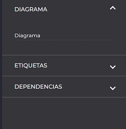
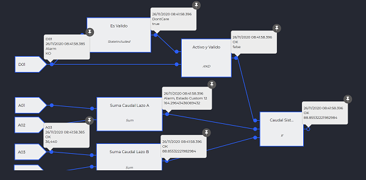
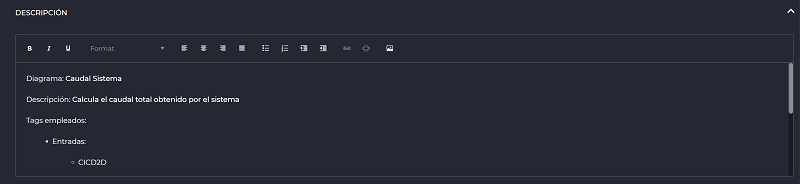

DIAGRAMAS
- Introducción
- 1.1 Edición del cálculo
- 1.1.1 Acciones y preferencias
- 1.1.2 Señales
- 1.1.3 Diagrama
- 1.1.3.1 Etiquetas
- 1.1.3.2 Dependencias
- 1.1.4 Propiedades de la señal
- 1.1.5 Selección múltiple
- 1.2 Componentes
- 1.2.1 Características
- 1.2.2 Tipos
- 1.2.2.1 Entrada
- 1.2.2.2 Enviadores
- 1.2.2.3 Constantes
- 1.2.2.4 Conversores
- 1.2.2.5 Funciones
- 1.2.2.6 Filtros
- 1.2.2.7 Operadores
- 1.2.2.8 Validación
- 1.2.2.9 Temporizadores
- 1.2.2.10 Flujo
- 1.2.2.11 Otros
- 1.3 Reproducción
- 1.4 Documentación del cálculo
- 1.1 Edición del cálculo
1. Introducción
El principal módulo de cálculo que integra la herramienta para ejecutar evaluaciones lógicas y generar nuevas señales dentro del sistema, es diagramas o cálculos del BPM (Business Process Management). La herramienta permite, a partir de una o múltiples señales de entrada, procesar unos determinadas componentes lógicos o acciones, con el objetivo de generar una nueva señal de salida que formará parte del sistema y sobre la que podrán aplicar los análisis pertinentes.
Los nuevos diagramas se pueden crear desde la sección de accesos directos del cliente Web.

1.1 Edición
Una de las principales características que proporciona el módulo es la capacidad de edición online de un cálculo desde el propio cliente Web. Se proporciona una lista de características para poder diseñar con un editor tradicional nuestros cálculos y poder posteriormente ejecutarles dentro de una instancia de IDbox.
La ejecución del cálculo requerirá la intervención de un administrador una vez que éste fue diseñado apropiadamente.
1.1.1 Acciones y preferencias
Desde el apartado de Menú, situado en el lateral izquierdo (colapsable) se proporcionan las tradicionales acciones de edición de un diagrama:

- Copiar: Posibilidad de copiar (combinación de teclado CTRL+C) elementos.
- Pegar: Acción de pegar aquellos elementos previamente copiados (CTRL+V)
- Clonar: Capacidad de clonar elementos previamente diseñados y configurados sobre el tapiz del diagrama.
- Eliminar: Posibilidad de borrar elementos con una acción de surpimir (tecla de Supr)
- Preferencias del canvas: Características de tamaño, color de fondo y ajustes de contenido del tapiz del diagrama.
- Ocultar rejilla: Acción que permite deshabilitar las líneas de orientación sobre el tapiz en el caso que no fueran necesarias.
- Panel de propiedades: Propiedades generales del diagrama.
1.1.2 Señales
Desde el menú lateral izquierdo, se encuentra la acción de añadir señales al tapiz con una simple acción de arrastrar el icono sobre el tapiz del diagrama que posteriormente abrirá un menú contextual con la lista de señales disponibles dentro del sistema.
Desde este menú del sistema se podrán seleccionar una o múltiples señales que se traducirán en las señales de entrada del cálculo.
Arrastrando la rueda del ratón permite poder moverte por el diagrama, así como combinando la tecla CTRL aumentar o disminuir el detalle.
1.1.3 Diagrama
Se encuentra esta característica seleccionando el tapiz del diagrama y en el menú lateral derecho, que es la región donde se muestra información individual según el elemento seleccionado. La configuración del diagrama permite acceder a los principales detalles de configuración como son el nombre actual del diagrama (vacío si estamos editando un nuevo diagrama), etiquetas y sus dependencias.

1.1.3.1 Etiquetas
Listado de todas las principales puertas de entrada del cálculo (señales que intervienen) así como las salidas (señales resultantes).
1.1.3.2 Dependencias
En este apartado se listan todas aquellas dependencias con otros diagramas según alias de cálculo que permita reutilizar rutinas de evaluación, así como pequeñas acciones u operaciones lógicas que se deduzcan en otros diagramas externos y por lo tanto, relacionados.
1.1.4 Propiedades de la señal
Cuando se selecciona una señal sobre el lienzo se muestra su información: nombre de la señal seleccionada, formato (analógico, digital o discreto), unidades y descripción.

1.1.5 Selección múltiple
Cuando se selecciona más de un elemento sobre el tapiz de un diagrama, se despliega a la derecha un panel informativo con las estadísticas de número de componentes, enlaces, puertas y totales.
Además, se permite alinear la selección en varias posiciones.

1.2 Componentes
Listado de todos aquellos elementos necesarios para poder diseñar las evaluaciones lógicas que se requieren dentro de un cálculo.
Se seleccionan desde el menú lateral izquierdo y haciendo click sobre el icono que mostrará todos aquellos elemenentos organizados por tipo y detallados en el siguiente listado inferior.
Se permite la posibilidad de filtrar elementos según tipos de componente desde un buscador en la cabecera superior del menú que filtrará según se escribe. En la parte inferior, se muestra una pequeña leyenda de información que describe brevemente el elemento seleccionado.
Para añadir un elemento sobre el tapiz, solamente será necesario desplegar la agrupación oportuna y seleccionar el componente, arrastrándolo sobre el tapiz actual para posteriormente comenzar a enganchar sus puertas de entrada y habilitando las pertinentes de salida.
También se puede consultar la información correspondiente al componente seleccionando, mostrándose sobre el panel inferior del panel izquierdo.
Existe la posibilidad de ampliar el tamaño del componente en el tapiz, arrastrando la esquina inferior derecha y ampliándolo según se requiera.
1.2.1 Características
Una vez que se selecciona un componente en concreto, desde el menú lateral derecho del editor se listan todas las características principales del elemento:
- Nombre
- Tipo
- Puertas
- Parámetros
Una de las principales características de edición de un componente es la configuración de sus puertas (los puntos de entrada o salida en un flujo de ejecución).
Al pulsar sobre el botón “Editar puertas” se abre una nueva ventana en la que se muestran:
-
Puertas de entrada: Son aquellos puntos de entrada del flujo de ejecución sobre un componente. Se permite introducir una descripción, elegir un rol entre los posibles (dependen del tipo de componente), cambiar su visibilidad, ver si tiene algún enlace, añadir o eliminar señales.
-
Puertas de salida: El punto o los puntos de sálida en un proceso. Presenta las mismas características que las puertas de entrada, pero también se puede asignar un “alias” o asociar un señal de salida con la que enlace el cálculo. No se podrá seleccionar una señal y un alias simultáneamente para la misma puerta. Esta señal será la nueva señal calculada que configure el diagrama de cálculo.
Un rol es el tipo de comportamiento que presenta la puerta (entrada, salida o según su tipo), mientras que un alias representa un nombre intermedio de cálculo que puede compartirse en otros cálculos como evaluaciones parciales de un cálculo mayor.
Desde el apartado inferior de parámetros del menú de configuración del componente, se asignan todos aquellos que afecten al componente seleccionado y que varían según su tipo o comportamiento.
1.2.2 Tipos
A continuación se detallan a grandes rasgos los principales componentes que proporciona el editor online y que se encuentran en constante evolución o disponibilidad según el tipo de instalación que se configure.
En oportunidades la siguiente lista podría verse sujeta a cambios:
1.2.2.1 Entrada
Grupo de componentes que únicamente presentan puertas de salida como flujo de entrada en un cálculo. Por ejemplo, Driver FTP, Simulador, etc.
1.2.2.2 Enviadores
Grupo de componentes que únicamente presentan una única puerta de entrada como flujo final en un cálculo. Por ejemplo, envíos SMS, Mail, Post, etc.
1.2.2.3 Constantes
Todos aquellos componentes que configuran una constante como parte del cálculo y que por índole únicamente disponen de puertas de salida. Este tipo de componentes configuran un valor permanente y que se dispara con una frecuencia constante.
1.2.2.4 Conversores
Componentes que convierten un grupo de entradas en una determinada salida y que se agrupan según temperatura, tiempo o tipo.
1.2.2.5 Funciones
Grupos de componente relacionados con la evaluación de funciones internas dentro de un cálculo que aceptan multiples entradas y una única salida.
1.2.2.6 Filtros
Lista de componentes que actúan como filtros evaluando estados, cambiando valores o aplicando máscaras sobre estados de una muestra.
1.2.2.7 Operadores
Grupo de principales operadores lógicos para configurar un cálculo y que se desglosan en los siguientes:
- Aritméticos: Multiplicaciones, sumas, restas, divisiones, logaritmos, porcentajes, etc.
- Lógicos: Tipos lógicos como AND, OR, NOR, NOT, NAND, etc.
- Relacionales: Comparaciones, mayor que, menor, diferentes, etc.
- Trigonométricos: Tangentes, cosenos, senos, arco tangente, tangente hiperbólica, etc.
- Contadores: Cuentas de estados, valores, totales, lógicos, pulsos, etc.
- Estadísticos: Resúmenes estadísticos de tipos analógicos, digitales, discretos, condicionales.
1.2.2.8 Validación
Componentes que comprueban estados o rangos según un conjunto de entradas o salidas.
1.2.2.9 Temporizadores
Componentes principales para marcar una frecuencia de ejecución o activar una condición temporal dentro de un diagrama de cálculo.
1.2.2.10 Flujo
Componentes principales de flujo de ejecución de un cálculo como condiciones, pasos selectivos (switch), válvulas, etc.
1.2.2.11 Otros
Grupos de componentes extra que pueden variar según el tipo de instalación o terceras implementaciones.
1.2 Reproducción
Para visualizar o reproducir un cálculo online, será necesario seleccionar un documento de tipo Diagrama desde el explorador del sistema y directamente abrir el documento en modo visualización. En él podemos hacer zoom con el ratón y mover el diagrama arrastrándolo.
También se dispone de la posibilidad de editar un documento y comprobar progresivamente los cambios utilizando el botón de play superior de la cabecera.
Para consultar el tiempo real del diagrama o depurar el flujo de ejecución del mismo, es tan sencillo como situar el puntero del ratón por encima de la puerta deseada (círculos). Si queremos mostrar los mensajes con la información asociada a un componente (rectángulo), pasaremos el puntero del ratón por encima del componente que corresponda.
Ambos mensajes emergentes, los referentes a las puertas y a los componentes, se pueden fijar haciendo click sobre la chincheta que aparece en la esquina superior derecha.

1.3 Documentación del cálculo
Se puede desplegar con una simple acción de click sobre el título de descripción de la barra de herramientas o haciendo click directamente sobre el panel colapsado, en la parte inferior derecha (icono de flecha). Al desplegarse, muestra la documentación correspondiente al cálculo y un editor embebido para conformar el detalle. El editor puede ampliar a pantalla completa pulsando sobre el icono y así tener una mayor comodidad, tanto visualizando como editando.
